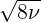
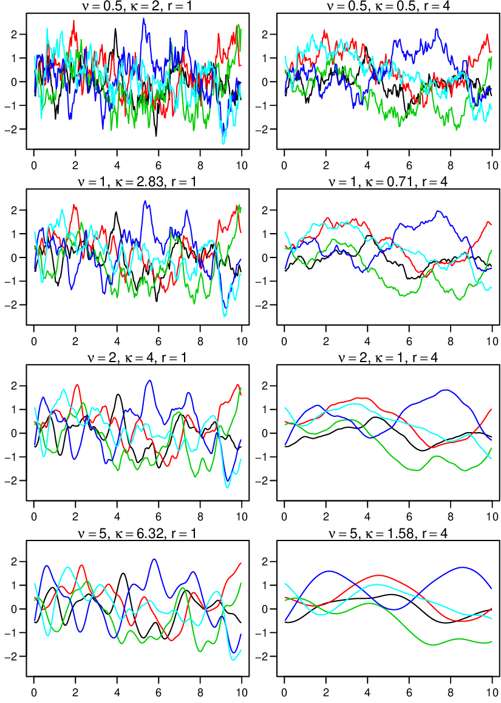
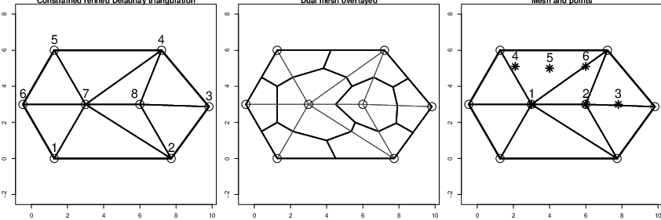
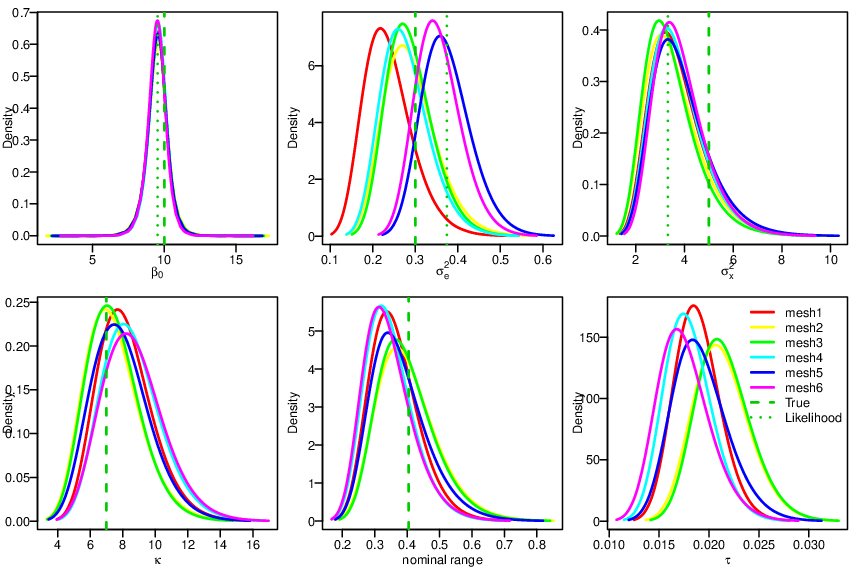

Figure 1.2: The simulated toy example data.
This content is part of the book available at http://www.r-inla.org/spde-book, whose Gitbook version is freely available along all the code and datasets.
The R source code for this introduction is available at http://inla.r-inla-download.org/r-inla.org/tutorials/spde/R/spde-tutorial-introduction.R
A point-referenced dataset is made up of any data measured at known locations. These locations may be in any coordinate reference system, most often longitude and latitude. Point-referenced data are common in many areas of science. This type of data appears in mining, climate modeling, ecology, agriculture and elsewhere. If we want to incorporate the influence of location in a model for the data we need a model for geo-referenced data.
A regression model can be built using the location’s coordinates as a covariates. In some cases it will be necessary a complicated function based on the coordinates to adequately describe the effect of the location. For example, we can consider basis functions on the coordinates and use it as covariates in order to build a complex function. This model explictly the trend on the mean.
Alternatively, it may be more natural to model explictly the variations of the outcome considering that it maybe similar at nearby locations. The first law of geography asserts: “Everything is related to everything else, but near things are more related than distant things”, [Tobler, 1970]. We need a model that incorporates the property that an observation is more correlated with an observation collected at a neighboring location than with another observation that is collected from farther away. A spatially-structured random effects model incorporates such spatial dependency rather than simply one consistent spatial trend across a domain. Sometimes it is appropriate to include both terms in a model.
The models that accounts for spatial dependency may be defined depending whether the locations are areas (cities for example) or points. The latter case is usually divided when considering the locations as fixed (geostatistics or point-referenced data) or random (point process), [Cressie, 1993].
To introduce some notation, let s be any location in a study area and let U(s) be the random (spatial) effect at that location. U(s) is a stochastic process, with s ∈ D, where D is the domain of the study area and D ∈ℜd. Suppose, for example, that D is one country and we have data measured at geographical locations, over d = 2 dimensions within this country.
Suppose we assume that we have a realization of u(si), i = 1,2,...,n, a realization of U(s) in n locations. It is commonly assumed that u(s) has a multivariate Gaussian distribution. If we assume that U(s) is continuous over space, we have a continuously-indexed Gaussian field (GF). This implies that it is possible to collect these data at any finite set of locations within the study region. To complete the specification of the distribution of u(s), it is necessary to define its mean and covariance.
A very simple option is to define a correlation function based only on the Euclidean distance between locations. This assumes that if we have two pairs of points separated by the same distance h, both pairs have same degree of correlation. It is intuitive to choose a function that decrease with distance, h. [Abrahamsen, 1997] presents Gaussian random fields and correlation functions.
Now suppose that we have data yi observed at locations si, i = 1,...,n. If an underlying GF generated these data, we can fit the parameters of this process considering y(si) = u(si), where the observation y(si) is assumed to be a realization of the GF at the location si. If we assume y(si) = μ + u(si), we have one more parameter to estimate. It is worth mentioning that the distribution for u(s) at a finite number of points is considered a realization of a multivariate distribution. In this case, the likelihood function is the multivariate distribution with covariance Σ.
In many situations we assume that there is an underlying GF but we cannot observe direclty. Instead we observe data with a measurement error
| y(si) = u(si) + ei. | (1.1) |
It is common to assume that ei is independent of ej for all i≠j and ei ~ N(0,σe). This additional parameter, σe, measures the remaining noise and is called the nugget effect. The covariance of the marginal distribution of y(s) at a finite number of locations is Σy = Σ + σe2I. This is a short extension of the basic GF model, and gives one additional parameter to estimate. For more about this model see [Diggle and Ribeiro Jr, 2007].
To usual way to evaluate the likelihood function, which is just a multivariate Gaussian density for the model in Eq. 1.1, usually considers a Cholesky factorization of the covariance matrix. Because this matrix is a dense, this is a operation of order O(n3), so this is a ’big n problem’. Some software for geostatistical analysis uses an empirical variogram to fit the parameters of the correlation function. However, this option does not make any assumption about a likelihood function for the data or uses a multivariate Gaussian distribution for the spatially structured random effect. A good description of these techniques is available in [Cressie, 1993].
When extending the model to deal with non-Gaussian data, it is usual to assume a likelihood for the data conditional on an unobserved random effect, which is GF to model the spatial dependence. Such spatial mixed effects model is under the the model based geostatistics approach, citediggleribeiro:2007. It is possible to describe the model in Eq. 1.1 within a larger class of models, hierarchical models. Suppose that we have observations yi for locations si, i = 1,...,n. We start with
|
| (1.2) |
where μi = h(FiT β + ui), F is a matrix of covariates, u is the random effect, θ are parameters for the random effect, β are covariate coefficients, h() is a function mapping the linear predictor FiT β + ui to E(yi) = μi and ϕ is a dispersion parameter of the distribution, in the exponential family, which is assumed for yi. To write the GF with a nugget effect, we replace β0 with FiT β, assume a Gaussian distribution for yi, with variance σe2 and u as a GF. However, at times one does consider a multivariate Gaussian distribution for the random effect, it becomes impractical to use covariance directly for model-based inference.
In another area of spatial statistics, the analysis of areal data, there are models specified by conditional distributions that imply a joint distribution with a sparse precision matrix. These models are called Gaussian Markov random fields (GMRF) and a good reference is [Rue and Held, 2005]. It is computationally easier to make Bayesian inference when we use a GMRF than when we use a GF, because the cost in computation of working with a sparse precision matrix in GMRF models is O(n3∕2). This makes it easier to conduct analyses with big ’n’.
We can extend this basic hierarchical model in many ways, and we return to some extensions later. If we know the properties of the GF, we can study all the practical models that contain or are based on, this random effect.
A very popular correlation function is the Matérn correlation function. It has a scale parameter κ > 0 and a smoothness parameter ν > 0. For two locations si and sj, the stationary and isotropic Matérn correlation function is:
|
| (1.3) |
where ∥ . ∥ denotes the Euclidean distance and Kν is the modified Bessel function of the second order. The Matérn covariance function is σuCor(U(si),U(sj)), where σu is the marginal variance of the process.
If we have a realization u(s) from U(s) at n locations, s1,...,sn, we can define its joint covariance matrix. Each entry of this joint covariance matrix Σ is Σi,j = σuCorM(u(si),u(sj)). It is common to assume that U(.) has a zero mean. We have now completely defined a multivariate distribution for u(s).
To gain a better feel about the Matérn correlation we can drawn samples from the RF process and look at it. A sample u is drawn considering u = Lz where L is the Cholesky decomposition of the covariance at n locations and z is a vector with n samples drawn from a standard Gaussian distribution. It implies that E(u) = E(Lz) = LE(z) = 0 and V ar(u) = L′Var(z)L = L′L. We define functions to do the sampling bellow
In order to simplify the visualization of the properties, we consider a set of n = 249 locations in the one-dimensional space from 0 to 25.
We consider four values for the smoothness parameter ν. The values for the κ parameter was determined from the practical range expression ∕κ, which is the distance that gives correlation near 0.13. By combining the four values for ν with two values for the practical range we have eight parameter configurations.
The sample value depends on the covariance matrix and on the noise considered from the standard Gaussian distribution, z. We consider a set of five vectors of size n drawn from the standard Gaussian distribution. These five standard Gaussian were the same among the eight parameter configurations in order to keep track what the different parameter configuration are doing.
Therefore, we have a set of 40 different realizations, five for each parameter configuration
These samples are shown in the eight plots in Figure 1.1.3.

One important point to observe in Figure 1.1.3 is the main feature on the samples. It almost does not depends on the smoothness parameter. To see it consider one of the five samples (one of the colors) and compare it for different smoothness. Also, image if we add a noise on a smooth process, it will becomes hard them to distinguish what is due to noise from what is due to smoothness. Therefore, in practice we usually fix the smoothness parameter and add a noise term.
We will now draw a sample from the model in Eq. 1.1 and use in Section 1.2. We consider a set of n = 100 locations within a square of area one and bottom left and top right limits of (0,0) and (1,1). We choose a higher density of locations in the bottom left corner than in the top right corner. The R code to do this is:
We choose parameter values for the Matérn as σu2 = 5, κ = 7 and ν = 1. We define the mean β0 = 10 and the nugget parameter σe2 = 0.3. We declare values for these parameters using
Now we need to sample from a multivariate distribution with constant mean equals β0 and covariance σe2I + Σ, which is the marginal covariance of the observations.
We show these simulated data in a graph of the locations where the size of the points is proportional to the simulated values. Figure 1.1.4 was produced with the code below
This data will be used as a toy example in this tutorial. It is available in the R-INLA package and can be loaded by
In this section we summarizes the main results in [Lindgren et al., 2011]. If your purpose does not includes understanding the methodology, you can skip this section. If you keep reading this section and have difficulty, do not be discouraged. You may still be able to use INLA effectively even if you have only a limited grasp of what’s ’under the hood.’
[Rue and Tjelmeland, 2002] proposed to approximate a continuous field using a Gaussian Markov Random Field - GMRF. This idea is not so strange since there are continuous random fields that are Markov. This is the case when the continuous field is a solution of a linear stochastic partial differential equation, see [Rozanov, 1977]. [Lindgren et al., 2011] provided that the GRF with Matérn correlation is a solution for an stochastic partial differential equation (SPDE).
If you want to get an intuition about the approach, we tried to provide it in this section. However, if you want to know all the details, they are in the Appendix of [Lindgren et al., 2011]. In few words it uses the Finite Element Method (FEM) along with basis functions carefully chosen to preserve the sparse structure of the resulting precision matrix for the random field at a set of mesh nodes. This provides an explicit link between a continuous random field and a GMRF representation, which allows efficient computations.
Lindgren’s first main provided that a GF with a generalized covariance function, obtained when ν → 0 in the Matérn correlation function, is a solution of a SPDE. This extends the result obtained by [Besag, 1981]. A more statistical way of considering this result is when taking a regular two-dimensional lattice with number of sites tending to infinity. In this case the full conditional at the site ij has
|
| (1.4) |
and V ar(uij|u-ij) = 1∕a for |a| > 4. In the representation using a precision matrix, we have, for a single site, only the upper right quadrant and with a as the central element, such that
|
| (1.5) |
A GF U(s) with Matérn covariance is a solution to the following linear fractional SPDE
|
| (1.6) |
[Lindgren et al., 2011] show that for ν = 1 and ν = 2, the GMRF representations are convolutions of (1.5). So, for ν = 1 in that representation we have:
|
| (1.7) |
and, for ν = 2:
|
| (1.8) |
Interpreting the result intuitively, as the smoothness parameter ν increases the precision matrix in the GMRF representation becomes less sparse. Greater density of the matrix is because the conditional distributions depend on a wider neighborhood. The precision matrix for α = 2, Q2 = Q1C-1Q1, is a standardized square of the precision matrix for α = 1, Q1.
However, the denser matrix does not imply that the conditional mean is an average over a wider neighborhood. The conceptual parallel is going from a first order random walk to a second order one. To understand this point let us consider the precision matrix for the first order random walk, its square and the precision matrix for the second order random walk.
It is common point data are not located on a grid, but instead are distributed irregularly. [Lindgren et al., 2011] provide a second set of results that provide a solution for the case irregular grids. They use the finite element method technique (FEM), a tool that is used widely in engineering and applied mathematics to solve differential equations.
The domain can be divided into a set of non-intersecting triangles, which may be irregular, where any two triangles meet in at most a common edge or corner. The three corners of a triangle are named vertices or nodes. The solution for the SPDE and its properties will depend on the basis functions used. [Lindgren et al., 2011] choose basis functions carefully in order to preserve the sparse structure of the resulting precision matrix.
The approximation is

where ψk are basis functions, wk are Gaussian distributed weights, k = 1,...,m with m the number of vertices in the triangulation. Because ψk is piecewise linear within each triangle, with ψk is equal to 1 at vertices k and 0 at all other vertices, we wk is the value of the field at the vertex k. A stochastic weak solution was considered to show that the joint distribution for the weights determines the full distribution in the continuous domain. These weights can be interpolated for any point inside the triangulated domain.
We will now focus on the resulting precision matrix. It does consider the triangulation and the basis functions. It matches the first result when applying for a regular grid. Consider the set of m × m matrices C, G and Kκ with entries
 | (1.9) |
The precision matrix Qα,κ as a function of κ2 and α can be written as
|
| (1.10) |
The actual Kκ matrix consider

instead, which is common when working with FEM. Since  is diagonal Kκ is as sparse as
G.
is diagonal Kκ is as sparse as
G.
The projection of the weight for any location inside the mesh domain considers a linear interpolation in 2D. It uses the barycentric coordinates of the point with respect to the coordinates of the triangle vertices. For this particular case they are known also as areal coordinates. When a point is inside a triangle we have three non-zero values in the corresponding line of A. When it is along an edge, we have two non-zeros and when the point is on top of a triangle vertex we have only one non-zero which equals one.
The following code creates a set of six points, builds a mesh around them and extracts the FEM matrices (C, G and A):
We can gain intuition about this result by considering the structure of each matrix which is detailed in Appendix A.2 in [Lindgren et al., 2011]. It may be easier to understand it by considering the plots in Figure 1.1.5. In this figure we have a mesh with 8 nodes, shown in thicker border lines. The corresponding dual mesh form a collection of polygons around each mesh vertex.


The  matrix is diagonal for ii equals the area of the polygons formed from the dual mesh.
The ii is equal the sum of one third the area of each triangle that the vertice i is part of.
Notice that each polygon around each mesh node is formed by one third of the triangles that it
is part of.
matrix is diagonal for ii equals the area of the polygons formed from the dual mesh.
The ii is equal the sum of one third the area of each triangle that the vertice i is part of.
Notice that each polygon around each mesh node is formed by one third of the triangles that it
is part of.
The G matrix reflects the connectivity of the mesh nodes. Nodes not connected by edges have corresponding entry as zero. The values do not depend on the size of the triangles as they are scaled by the area of the triangles. For more detailed information, see A.2 in [Lindgren et al., 2011].
We have seen that the resulting precision matrix for increasing ν is a convolution of the precision matrix for ν - 1 with a scaled Kκ. It still implies denser the precision matrix when working with κC + G.
The Q precision matrix is generalized for a fractional values of α (or ν) using a Taylor approximation. See the author’s discussion response in [Lindgren et al., 2011]. From this approximation, we have the polynomial of order p = ⌈α⌉ for the precision matrix
 | (1.11) |
For α = 1 and α = 2 we have (1.10). For α = 1, we have b0 = κ2 and b1 = 1, and for α = 2, we have b0 = κ4, b1 = ακ4 and b2 = 1. For fractional α = 1∕2, b0 = 3κ∕4 and b1 = κ-13∕8. And for α = 3∕2 (ν = 0.5, the exponential case), b0 = 15κ3∕16, b1 = 15κ∕8, b2 = 15κ-1∕128. Using these results combined with recursive construction, for α > 2, we have GMRF approximations for all positive integers and half-integers.
This content is part of the book available at http://www.r-inla.org/spde-book, whose Gitbook version is freely available along all the code and datasets.
In this example we will fit a simple geostatistical model for the toy dataset simulated in Section 1.1.4.
We have n observations yi, i = 1,...,n, at locations si and we define the following model
|
| (1.12) |
where β0 is the intercept, A is the projector matrix and x is a spatial Gaussian random field.
The first step in working with SPDE is to build a mesh. We will use as a mesh a collection of triangles, formed by m vertices and the edges connecting them. This mesh has to cover the entire spatial domain of interest. More details on the mesh building are given in section 1.3. Here we will use the fifth mesh built in Section 1.3.3 using the following code
The SPDE model in the original parameterization can be built using the function inla.spde2.matern()
We will choose our parameters based instead on the marginal variance and the practical
range,  ∕κ. For details on this parameterization see [Lindgren, 2012]. When defining the
SPDE model we will need also to set priors for both the parameters. The smoothness
parameter ν is fixed as α = ν + d∕2 ∈ [1,2]. The inla.spde2.pcmatern() uses this
parameterization to set the Penealized Complexity prior, PC-prior, as derived in [Fuglstad
et al., 2017].
∕κ. For details on this parameterization see [Lindgren, 2012]. When defining the
SPDE model we will need also to set priors for both the parameters. The smoothness
parameter ν is fixed as α = ν + d∕2 ∈ [1,2]. The inla.spde2.pcmatern() uses this
parameterization to set the Penealized Complexity prior, PC-prior, as derived in [Fuglstad
et al., 2017].
Our example domain is the [0,1] × [0,1] square. We set the prior median to 0.3. We set the probability that the marginal standard deviation exceeds 1 to 1%. The toy dataset was simulated with α = 2 and it is considered to fit the model as well.
The second step in preparing to use SPDE is to build a projector matrix. This will project the random field modeled at the mesh nodes. For details, see section 1.1.5. The projector matrix can be built with the inla.spde.make.A function. Considering that each mesh vertex has a weight, the value for one point within one triangle is the projection of the plane (formed by these three weights) at this point location. The projection is a weighted average using weights computed by the inla.spde.make.A() function. Using the toy data set and example mesh number five, we have
This matrix has dimension equal to the number of data locations times the number of vertices in the mesh
There are some columns in the projector matrix all of whose elements equal zero.
When we have a mesh where every pont location is on a mesh vertex, each line on the projector matrix has exacty one nonzero element. This is the case for the mesh1 built in section 1.3.3.
The inla.stack() function is usefull for organizing data, covariates, indices and projector matrices. All are relevant to SPDE models. inla.stack() helps to control the way effects are projected in the linear predictor. Detailed examples including one dimensional, replicated random field and spacetime models are presented in [Lindgren, 2012].
In the toy example we have a linear predictor that can be written as

The first half of the right side represents the intercept. The term on the far right represents the spatial effect. Each component is represented as a product of a projector matrix and an effect.
The Finite Element Method solution considered for implementing the SPDE models build the model over the mesh nodes. Usually the number of nodes is not equal to the number of locations for which we have observations. The inla.stack function allows us to work with predictors that includes terms with different dimensions. The three main inla.stack() arguments are the data vectors list, a list of projector matrices (each related to one block effect) and the effects.
We need two projector matrices: the projector matrix for the latent field and a matrix that is a one-to-one map of the covariate and the response. The latter matrix can simply be a constant rather than a diagonal matrix. Thus we have
The inla.stack() function automatically eliminates the any column in a projector matrix that has a zero sum. It generates a new and simplified matrix. The inla.stack.A() extracts a simplified predictor matrix to use with the inla() function, while the inla.stack.data() function extracts the corresponding data.
The simplified projector matrix from the stack consists of the simplified projector matrices, where each column holds one effect block.
To fit the model, we need to remove the intercept from the formula and add it as a covariate term, so that all the formula’s covariate terms can be captured in a projector matrix. Them the matrix of predictors is passed to the inla() function in its control.predictor argument
The inla() function returns an object that is a set of several results. It includes summaries, marginal posterior densities of each parameter in the model, the regression parameters, each element that is a latent field, and all the hyperparameters.
The summary of β0 is obtained by
A marginal distribution in inla() output consists of two vectors. One is a set of values on the range of the parameter space with posterior marginal density bigger than zero and another is the posterior marginal density at each one of these values. Any posterior marginal can be transformed. If we want the posterior marginal for σe, the square root of σe2, for example, we use
The parameters of the latent field is parametrized as log(κ) and log(τ), where τ is the local variance parameter. We have the posterior marginals for κ, σx2 and for the nominal range (the distance that we have correlation equals 0.1). This can be done with the inla.spde2.result function
A very common objective when we have spatial data collected on some locations is the prediction on a fine grid to get hight resolution maps. In this subsection we show two approaches to make prediction of the random field, one is after the estimation process and other is jointly on estimation process. To compare both approaches, we predict the random field on three target locations: (0.1,0.1), (0.5,0.55), (0.7,0.9).
The prediction of the random field joint the parameter estimation process in Bayesian inference is the common approach. This approach is made by the computation of the marginal posterior distribution of the random field at target locations. If the target points are on the mesh, so we have automatically this distribution. If the target points are not on the mesh, we must define the projector matrix for the target points.
The predictor matrix for the target locations is
We have to define a data stack for the prediction and join it with the data stack of the observations. The prediction data stack contais the effect set, predictor matrices and assign NA to response
To access the posterior marginal distribution of the random field at the target locations, we extract the index from the full stack using the adequate tag.
Because it is a full bayesian analysis, we also we have the marginal distributions. We extract the marginals posterior distributions with
If we need just the prediction we can do the prediction after the estimation process with a very small computational cost. It is just a matrix operation in way that we just project the posterior mean of the the random field on mesh nodes to target locations, using the correspondent projector matrix.
So, we ’project’ the posterior mean of the latend random field to the target locations by
Also, we can get the standard deviation
The approach by the projection of the posterior mean random field is computationaly cheap. So, it can be used to get the map of the random field on a fine grid. The inla.mesh.projector() function get the projector matrix automatically for a grid of points over a square that contains the mesh.
To get projection on a grid at the domain (0,1) × (0,1) we just inform these limits
Another commom result that we want on spatially continuous modelling is the prediction of the response on a target locations that we don’t have data observed. In similar way that on past subsection, it is possible to find the marginal distribution or to make a projection of some functional of the response.
In this case, we want to define a adequate predictor of the response and build the model again. This is similar to the stack to predict the random field, but here we add the intercept on the list of predictor matrix and on the list of effects
We find the index of the predictor that corresponds the predicted values of the response on the target locations. We extract the index from the full stack by
To get the summary of the posterior distributions of the response on target locations we do
A computational cheap approach is to (naively) sum the projected posterior mean to the regression term. In this toy example we just sum the posterior mean of the intercept to the posterior mean of the random field to get the posterior mean of the response.
If there are covariates, the prediction also can be made in similar way, see . That approach can be used here considering just the intercept
The computation of all marginal posterior distributions on a grid is computationally expensive. But, we usually not uses the marginal distributions. We usually uses just the mean and standard deviation. So, we don’t need the storage of all the marginal distributions! Also, we don’t need the quantiles of the marginal distributions.
On the code below, we build the model again but we disable the storage of the marginal posterior distributions to random effects and to posterior predictor values. Also, we disable the computation of the quantiles. Only the mean and standard defiation are stored.
We use the projector matrix on the projector object that we use to project the posterior mean on the grid
We get the indexes

We see on Figure 1.2.6 that we have a variation from -4 to 4 on the spatial effect. Considering also that we have standard deviations around 0.8 to 1.6, the spatial dependence is significantly.
Another thing is that the standard deviation of both, random field and the response, are less near the corner (0, 0) and greater near the corner (1,1). This is just proportional to the locations density.
In this subsection we compare six results for the toy dataset based on the six different meshs builded on Section 1.3. To do this comparison, we just plot the posterior marginal distributions of the model parameters. We evaluate the meshes by the addiction of the true values used on the simulation of the toy dataset. Also, we add the maximum likelihood estimates from geoR package, [Ribeiro Jr and Diggle, 2001].
We fit the model, using each one of the six meshes, and put the results in a list with the code bellow
The mesh size influences the computational time needed to fit the model. More nodes on the mesh need more computational time. The time running inla for these six meshes are
We compute the distribution for σe2 for each fitted model
The true values are: β0 = 10, σe2 = 0.3, σx2 = 5, κ = 7 and ν = 1. The ν parameter is fixed on the true value when we define α = 2 on definition of the SPDE model.
We want to visualize the posterior marginal distributions for β0, σe2, σx2, κ, nominal range and the local variance τ. This can be done with the code bellow
At the Figure 1.2.7 we can see that the posterior marginal distribution for the intercept has mode on the likelihood estimate, considering the results from all six meshes.
The main differences are on the noise variance σe2 (the nugget effect). The result from the mesh based on the points and with small triangles mode less than the likelihood estimate, the second has mode near likelihood estimate and the third large. Considering the other meshes, the mesh four has mode around likelihood estimate and the other two litle larger, similar to the third mesh, such is based on points but with some freedom (cutoff greather than zero).
For the marginal variance of the latent field, σx2, the results with all meshes had mode near the likelihood estimate. For the scale parameter κ all meshes has mode less than the likelihood estimate. The posterior distribution from the meshes based on points are that ones with less mode and that the mode from third mesh are the less. For the practical range the opposite happens.

These results are not conclusive, but a general comment is that is good to have a mesh with some tune on the points locations, to access noise variance, but with some flexibility to avoid many variability on the triangles size and shape, to get good latent field parameters estimation.
This content is part of the book available at http://www.r-inla.org/spde-book, whose Gitbook version is freely available along all the code and datasets.
You can play with the shiny app typing demo(mesh2d)
The first step to fit the model is the construction of the ’mesh’. This step must be done VERY CAREFULLY. It is similar to choosing the integration points on a numeric integration algorithm. Should the boints be regular? How many points are needed?
Additionally, we need to add, ALSO CAREFULLY, additional points around the boundary, the outer extension. This is necessary to avoid a boundary effect where we have a variance twice as larger at the border than within the domain [Lindgren, 2012]. For more about it please see [Lindgren and Rue, 2015].
For a two dimentional mesh, we have a main function inla.mesh.2d() that is recommended to use for building a mesh. This function creates the Constrained Refined Delaunay Triangulation (CRDT) that we just call mesh. There are a several options:
We need some reference about the study region, which can be provided by the location points or just a domain. The location, supplied on the loc argument, are used as initial triangulation nodes. A single polygon can be supplied to determine the domain extent on the loc.domain argument. If we supply the point locations, or the domain is supplied using the loc.domain argument, the algorithm find a convex hull mesh. A non convex hull mesh can be made when we provide a (list of) set of polygons on the boundary argument, where each element of this list is of inla.mesh.segment() class. So, one of these three options is mandatory.
The other mandatory argument is the max.edge. This argument specifies the maximum allowed triangle edge lengths in the inner domain and in the outer extension. So, it is a scalar or length two vector. This argument is numeric on the SAME SCALE UNIT as the coordinates.
The another arguments are used to specify additional conditions. The offset is a numeric, or length two vector. If negative it is interpreted as a factor relative to the approximate data diameter. If positive it is the extension distance on same scale unit to the coordinates provided.
The argument n is the initial number of points on the extended boundary. The interior is a list of segments to specify interior constraints, each one of inla.mesh.segment class. A good mesh needs to have triangles as regular as possible in size and shape. To help this requirement in addition to max.edge, we have the min.angle argument, which can be scalar or length two vector, to specify the minimum internal angles of the triangles on the inner domain and on the outer extension. Values up to 21 guarantee the convergence of the algorithm.
To further control the shape of the triangles, we also have the cutoff argument, which is the minimum allowed distance between points. It means that points at a closer distance than the supplied value are replaced by a single vertex. So, it avoids small triangles and must be a positive number, and is critical when we have some very close points, either for point locations or on the domain boundary.
To understand how this function works, we apply it while varying some arguments to the first five locations of the toy dataset.
Creating some meshes for the first five points:
The m1 mesh has two main problems: 1) some triangles with small inner angles, 2) some large triangles in the inner domain. In the m2 mesh, we relax the restriction on the locations, because points with distance less than the cutoff are considered a single vertex. This avoids some of the triangles (at bottom right side) with small angles on the previous mesh. So the cutoff is a VERY GOOD idea! Each inner triangle in the m3 mesh on the top right had edge length less than 0.1 and this mesh looks better than the two previous ones.
The m4 was made without first building a convex hull extension around the points. It has just the second outer bondary. In this case, the length of inner triangles does not work (first value on max.edge argument) and we have triangles with edge lengths up to 0.5. The shape of the triangles looks good, except for these ones with vertices including the two points at the bottom right side.
The m5 mesh was made just using the domain polygon and it has shape similar to the domain area. In this mesh we have some small triangles at corners due the fact that is was built without specifying a cutoff. Also, we have a (relatively) small first extension and a (relatively) large second one. On the m6 mesh we have added the cutoff and got a better mesh than the previous one.
In the last tree meshes we change the initial number of extension points. It can be useful to change in some situations to get convergence. Here we show the shape of the mesh that we got with, for example, n=5, in the m7 mesh. This number produces a mesh that seems inadequate for this domain because we have a non uniform exension behind the border. The m9 mesh has very bad triangles shapes.
The object returned by the inla.mesh.2d() function is of class inla.mesh and contains a list of things:
All the meshes in Figure 1.3.1 are made to have a convex hull boundary. A convex hull is a polygon of triangles out of the domain area, the extension made to avoid the boundary effect. A triangulation without an additional border can be made by supplying the boundary argument instead of the location or loc.domain argument. One way is to build a boundary for the points and supply it on boundary argument.
We can also build boundaries using the inla.nonconvex.hull() function
These meshes are visualized in Figure 1.3.2 by commands bellow
The m10 mesh is built with a boundary that we got using default arguments in the inla.nonconvex.hull() function. The default convex and concave arguments are both equal 0.15 proportion of the points domain radius, that is computed by
To analyze the toy data set, we use six triangulation options to make comparisons in section 1.2.7. The first mesh forces the location points to be vertices of the mesh.
The second and third meshes are based on the points, but we use a cutoff greather than zero to avoid small triangles in regions where we have dense observations
We also build three other meshes based on the domain area. These are built to have approximately the same number of vertices as the previous ones
The number of nodes in each one of these meshes is
These six meshes are shown in Figure 1.3.3 with code below
We have some examples using data collected in Paraná state, in Brazil. In this case we need to take into account two things: one is the shape of this domain area and the other is the coordinates reference system.
We have the daily rainfall data
Also, we have the Paraná state polygon with
In this case is best to use a non-convex hull mesh. We start by building a non-convex domain with
We can visualize both meshes on the Figure 1.3.4 with commands below
Suppose that we have a map of the domain region. In R the representation of a spatial object is made using object classes in the sp package, see [Pebesma and Bivand, 2005] and [Bivand et al., 2008]. To show an aplication in this case, we use the North Carolina map, in package spdep, [Bivand et al., 2012].
We simplify this map by uniting all the areas together. To do it, we use the unionSpatialPolygons() maptools function that uses function of the rgeos package [Bivand and Rundel, 2013].
Now, we use the inla.sp2segment() to extract the boundary of the SpatialPolygons object that contains the border of the map
Sometimes we need to deal with physical boundaries. It can be when there is a hole inside the domain or when the domain shape is not convex. An example of application is when modelling fish and we have to consider the inland as a physical barrier and, sometimes, islands inside the domain.
The polygons in the Figure 1.3.6 were created with the following commands:
We have two neighbour regions, one with a hole and one with no convex shape. Suppose that it is necessary to avoid correlation between near regions separated by land. For example, suppose that we want to make sure that the correlation between A and C is smaller than between A and B or between B and C.
In this example we do not want additional points outer the domain. To have it, we have to supply a length one value for max.edge. The following code is to prepare the boundary and built the mesh.
The mesh is displayed in the Figure 1.3.6 using the commands below:
Notice that when building the SPDE model, the neighborhood structure of the mesh is taken into account. So, it is easier to reach B from A than C on the related graph.